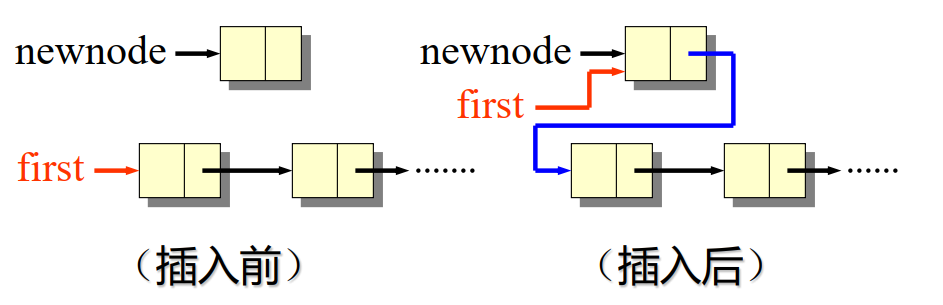
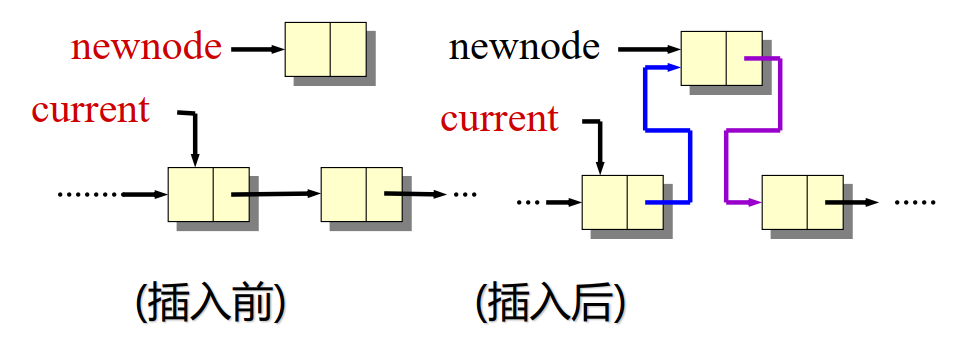
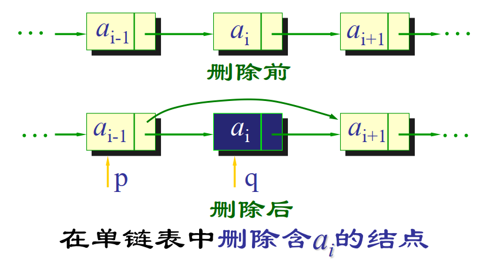

Stack 栈
栈是一种后进先出（LIFO, Last In First Out）的数据结构。主要操作有：
push: 将元素添加到栈顶pop: 移除并返回栈顶元素peek 或 top: 返回栈顶元素但不移除它isEmpty: 检查栈是否为空
顺序栈（数组实现）
使用数组实现栈，栈顶指针指向当前栈顶元素的位置
1 2 3 4 5 6 7 8 9 10 11 12 13 14 15 16 17 18 19 20 21 22 23 24 25 26 27 28 29 30 31 32 33 34 35 36 37 38 39 40 41 42 43 44 45 struct Stack { int top; int capacity; int * array; }; Stack* createStack (int capacity) { Stack* stack = (Stack*)malloc (sizeof (Stack)); stack->capacity = capacity; stack->top = -1 ; stack->array = (int *)malloc (stack->capacity * sizeof (int )); return stack; } void push (Stack* stack, int item) if (stack->top == stack->capacity - 1 ) { int * newArray = (int *)realloc (stack->array, stack->capacity * 2 * sizeof (int )); if (!newArray) { return ; } stack->array = newArray; stack->capacity *= 2 ; } stack->array[++stack->top] = item; } int pop (Stack* stack) if (stack->top == -1 ) { } return stack->array[stack->top--]; } int top (Stack* stack) if (stack->top == -1 ) { } return stack->array[stack->top]; }
链式栈（链表实现）
使用链表实现栈，每个节点包含数据和指向下一个节点的指针
1 2 3 4 5 6 7 8 9 10 11 12 13 14 15 16 17 18 19 20 21 22 23 24 25 26 27 28 29 30 31 32 33 34 35 36 37 38 39 40 41 42 43 struct Node { int data; struct Node * next; }; struct Stack { struct Node * top; }; Stack* createStack () { Stack* stack = (Stack*)malloc (sizeof (Stack)); stack->top = NULL ; return stack; } void push (Stack* stack, int item) struct Node * newNode = (struct Node*)malloc (sizeof (struct Node)); newNode->data = item; newNode->next = stack->top; stack->top = newNode; } int pop (Stack* stack) if (stack->top == NULL ) { } struct Node * temp = stack->top; int popped = temp->data; stack->top = stack->top->next; free (temp); return popped; } int top (Stack* stack) if (stack->top == NULL ) { } return stack->top->data; }
C++ STL 栈
C++ 标准模板库（STL）提供了 std::stack，可以直接使用
1 2 3 4 5 6 7 8 #include <stack> std::stack<int > s;; s.push (10 ); int topElement = s.top (); s.pop (); s.empty (); s.size ();
Queue 队列
队列是一种先进先出（FIFO, First In First Out）的数据结构。主要操作有：
enqueue: 将元素添加到队尾dequeue: 移除并返回队首元素front: 返回队首元素但不移除它isEmpty: 检查队列是否为空
顺序队列（数组实现）
使用数组实现队列，维护头尾指针。头指针指向队首元素，尾指针指向下一个可插入位置
1 2 3 4 5 6 7 8 9 10 11 12 13 14 15 16 17 18 19 20 21 22 23 24 25 26 27 28 29 30 31 32 33 34 35 36 37 38 39 40 41 42 43 44 45 46 47 48 class Queue {public : int front, rear, capacity; int * array; Queue (int size) { capacity = size; front = rear = 0 ; array = new int [capacity]; } void enqueue (int item) if ((rear + 1 ) % capacity == front) { int * newArray = new int [capacity * 2 ]; int j = 0 ; for (int i = front; i != rear; i = (i + 1 ) % capacity) { newArray[j++] = array[i]; } front = 0 ; rear = j; capacity *= 2 ; delete [] array; array = newArray; } array[rear] = item; rear = (rear + 1 ) % capacity; } int dequeue () if (front == rear) { } int item = array[front]; front = (front + 1 ) % capacity; return item; } int getFront () if (front == rear) { } return array[front]; } bool isEmpty () return front == rear; } };
链式队列（链表实现）
使用链表实现队列，维护头尾指针。头指针指向队首元素，尾指针指向队尾元素。与栈的链表实现类似，但需要同时维护头尾指针。
C++ STL 队列
C++ 标准模板库（STL）提供了 std::queue，可以直接使用
1 2 3 4 5 6 7 8 9 #include <queue> std::queue<int > q; q.push (10 ); int frontElement = q.front (); int backElement = q.back (); q.pop (); q.empty (); q.size ();
双端队列 Deque
双端队列允许在两端进行插入和删除操作。C++ STL 提供了 std::deque，可以直接使用
1 2 3 4 5 6 7 8 9 10 11 #include <deque> std::deque<int > dq; dq.push_back (10 ); dq.push_front (20 ); int frontElement = dq.front (); int backElement = dq.back (); dq.pop_back (); dq.pop_front (); dq.empty (); dq.size ();
Python 也有类似的 collections.deque 模块，可以实现双端队列的功能。
1 2 3 4 5 6 7 8 9 10 11 from collections import dequedq = deque() dq.append(10 ) dq.appendleft(20 ) front_element = dq[0 ] back_element = dq[-1 ] dq.pop() dq.popleft() is_empty = len (dq) == 0 size = len (dq)
Array, List 数组、列表
Array 数组
数组是一种线性数据结构，存储在连续的内存位置。主要特点包括：
固定大小：数组在创建时需要指定大小，大小不可更改。
快速访问：可以通过索引快速访问任意元素，时间复杂度为 O(1)。
插入和删除操作较慢：在数组中间插入或删除元素需要移动其他元素，时间复杂度为 O(n)。
C++ 直接使用 type array[size]; 来定义数组，或者使用 std::array 和 std::vector。
Array List
Array List 是一种基于数组的列表，能够根据需要自动调整大小。C++ STL 提供了 std::vector，Java 提供了 ArrayList 类。
1 2 3 4 5 6 7 #include <vector> std::vector<int > vec; vec.push_back (10 ); int element = vec[0 ]; vec.pop_back (); vec.size ();
1 2 3 4 5 6 7 import java.util.ArrayList;List<Integer> list = new ArrayList <>(); list.add(10 ); int element = list.get(0 ); list.remove(list.size() - 1 ); list.size();
Linked List 链表
Linked List 是一种动态数据结构，由节点组成，每个节点包含数据和指向下一个节点的指针。主要特点包括：
动态大小：链表可以根据需要动态增长或缩小。
插入和删除操作快速：在链表中插入或删除元素只需调整指针，时间复杂度为 O(1)。
访问元素较慢：需要从头节点开始遍历，时间复杂度为 O(n)。
下面展示 C++ 实现的链表。
节点与链表类
1 2 3 4 5 6 7 8 9 10 11 12 13 14 15 16 17 18 19 20 21 22 23 24 25 26 27 28 29 30 31 32 33 34 35 36 37 38 39 40 41 42 struct Node { int data; Node* next; }; class LinkedList { public : Node* head; LinkedList () { head = nullptr ; } void insert (int i, int data) void remove (int i) int get (int i) }; struct DoubleNode { int data; DoubleNode* next; DoubleNode* prev; }; class DoublyLinkedList { public : DoubleNode* head; DoubleNode* tail; DoublyLinkedList () { head = nullptr ; tail = nullptr ; } void insert (int i, int data) void remove (int i) int get (int i) };
插入
单链表的插入，分为在头部插入和在其他位置插入
在头部插入
1 2 newnode->next = head; head = newnode;

在其他位置插入
1 2 newnode->next = current->next; current->next = newnode;

总代码：
1 2 3 4 5 6 7 8 9 10 11 12 13 14 15 16 17 18 19 void LinkedList::insert (int i, int data) Node* newnode = new Node (); newnode->data = data; if (i == 0 ) { newnode->next = head; head = newnode; } else { Node* current = head; for (int index = 0 ; index < i - 1 && current != nullptr ; index++) { current = current->next; } if (current != nullptr ) { newnode->next = current->next; current->next = newnode; } else { } } }
双链表的插入
在头部插入
1 2 3 4 5 6 7 8 9 newnode->next = head; if (head != nullptr ) { head->prev = newnode; } head = newnode; if (tail == nullptr ) { tail = newnode; }
在其他位置插入
1 2 3 4 5 6 newnode->next = current->next; newnode->prev = current; if (current->next != nullptr ) { current->next->prev = newnode; } current->next = newnode;
删除
单链表的删除
删除头部节点
1 2 3 temp = head; head = head->next; delete temp;
删除其他位置节点
1 2 3 temp = current->next; current->next = temp->next; delete temp;

总代码：
1 2 3 4 5 6 7 8 9 10 11 12 13 14 15 16 17 18 19 20 21 22 23 24 void LinkedList::remove (int i) if (head == nullptr ) { return ; } Node* temp; if (i == 0 ) { temp = head; head = head->next; delete temp; } else { Node* current = head; for (int index = 0 ; index < i - 1 && current->next != nullptr ; index++) { current = current->next; } if (current->next != nullptr ) { temp = current->next; current->next = temp->next; delete temp; } else { } } }
双链表的删除
删除头部节点
1 2 3 4 5 6 7 8 9 temp = head; head = head->next; if (head != nullptr ) { head->prev = nullptr ; } delete temp;if (head == nullptr ) { tail = nullptr ; }
删除其他位置节点
1 2 3 4 5 6 temp = current->next; current->next = temp->next; if (temp->next != nullptr ) { temp->next->prev = current; } delete temp;
访问
单/双链表的访问
1 2 3 4 5 6 7 8 9 10 11 int LinkedList::get (int i) Node* current = head; for (int index = 0 ; index < i && current != nullptr ; index++) { current = current->next; } if (current != nullptr ) { return current->data; } else { } }